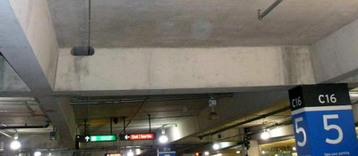
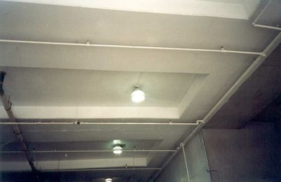
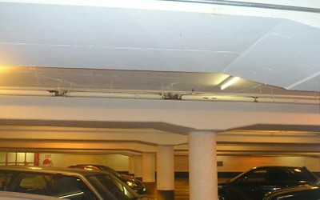

Techo de hormigón armado forjado in situ soportado por vigas [RC2]
Losas de hormigón armado que se apoyan en vigas. Esto incluye losas de hormigón colado in situ con vigas en todos los lados, forjados reticulares con vigas, sistema de losa de banda (común en Canadá), sistema de vigueta unidireccional (común en América del Norte ) , y losas de hormigón armado con y teja de barro artesonado. A veces se cubren con techos ligeros.

Losa de hormigón armado soportada por vigas, Canadá (S. Brzev)

Systema de forjado en banda de concreto reforzado, Canada (S. Brzev)

Losa de hormigón armado soportada por vigas, Canadá (S. Brzev)

Sistema de forjado reticular de hormigón armado con vigas, USA (S. Brzev)